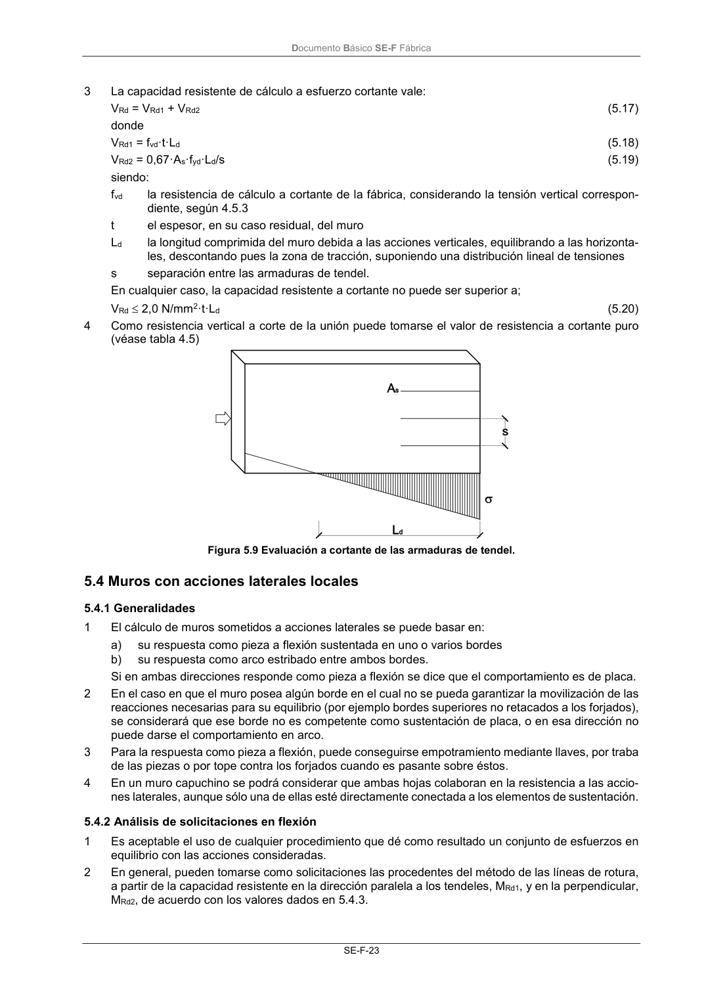
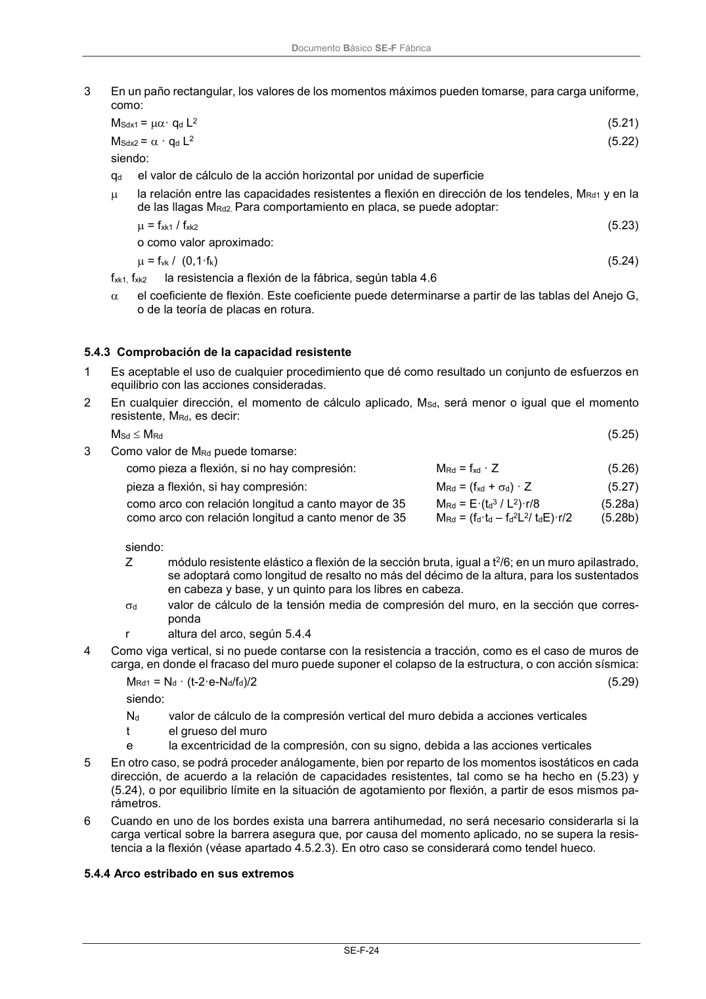

DB-SE-F · 5.4.2 Análisis de solicitaciones en flexión · versión 2019-12-20 · capa oficial
Formatos: JSON compacto · Markdown · PDF fuente
Ámbito del documento · texto del ámbito · documento y tablas
ID técnico a0062 · PDF pág. 27-28 · jerarquía no validada por persona · contrastado con el literal de la página 27 (candidato tipográfico); no validado por persona · padre: raíz
5.4.2 Análisis de solicitaciones en flexión 1 Es aceptable el uso de cualquier procedimiento que dé como resultado un conjunto de esfuerzos en equilibrio con las acciones consideradas. 2 En general, pueden tomarse como solicitaciones las procedentes del método de las líneas de rotura, a partir de la capacidad resistente en la dirección paralela a los tendeles, MRd1, y en la perpendicular, MRd2, de acuerdo con los valores dados en 5.4.3. Documento Básico SE-F Fábrica SE-F-24 3 En un paño rectangular, los valores de los momentos máximos pueden tomarse, para carga uniforme, como: MSdx1 = · qd L2 (5.21) MSdx2 = · qd L2 (5.22) siendo: qd el valor de cálculo de la acción horizontal por unidad de superficie la relación entre las capacidades resistentes a flexión en dirección de los tendeles, MRd1 y en la de las llagas MRd2. Para comportamiento en placa, se puede adoptar: = fxk1 / fxk2 (5.23) o como valor aproximado: = fvk / (0,1·fk) (5.24) fxk1, fxk2 la resistencia a flexión de la fábrica, según tabla 4.6 el coeficiente de flexión. Este coeficiente puede determinarse a partir de las tablas del Anejo G, o de la teoría de placas en rotura.


PDF fuente redistribuible: copia fiel enlazada en esta página (SHA256 verificado).